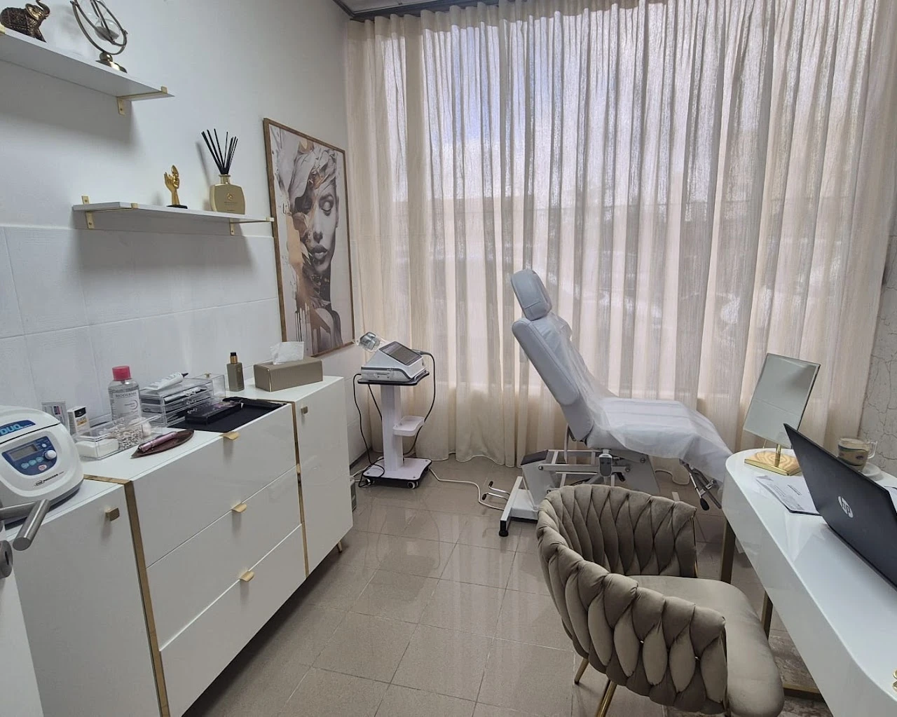
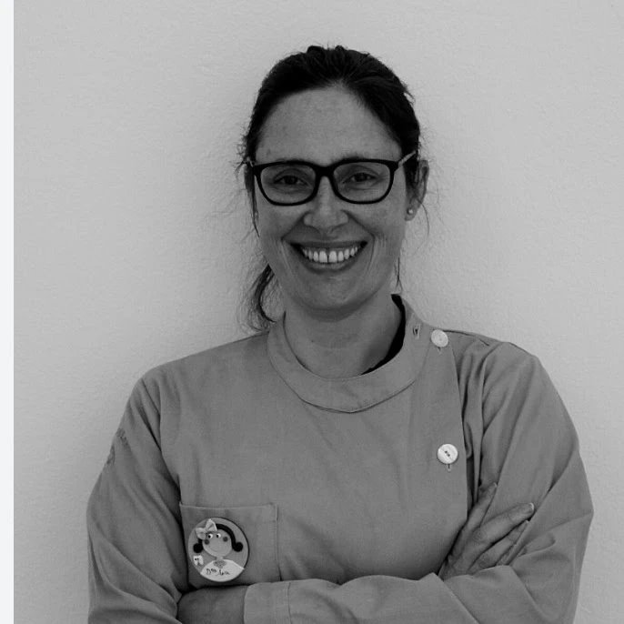
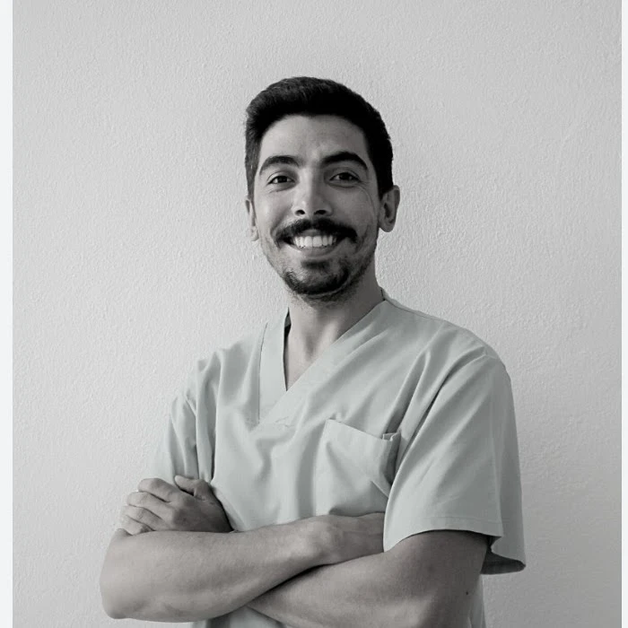
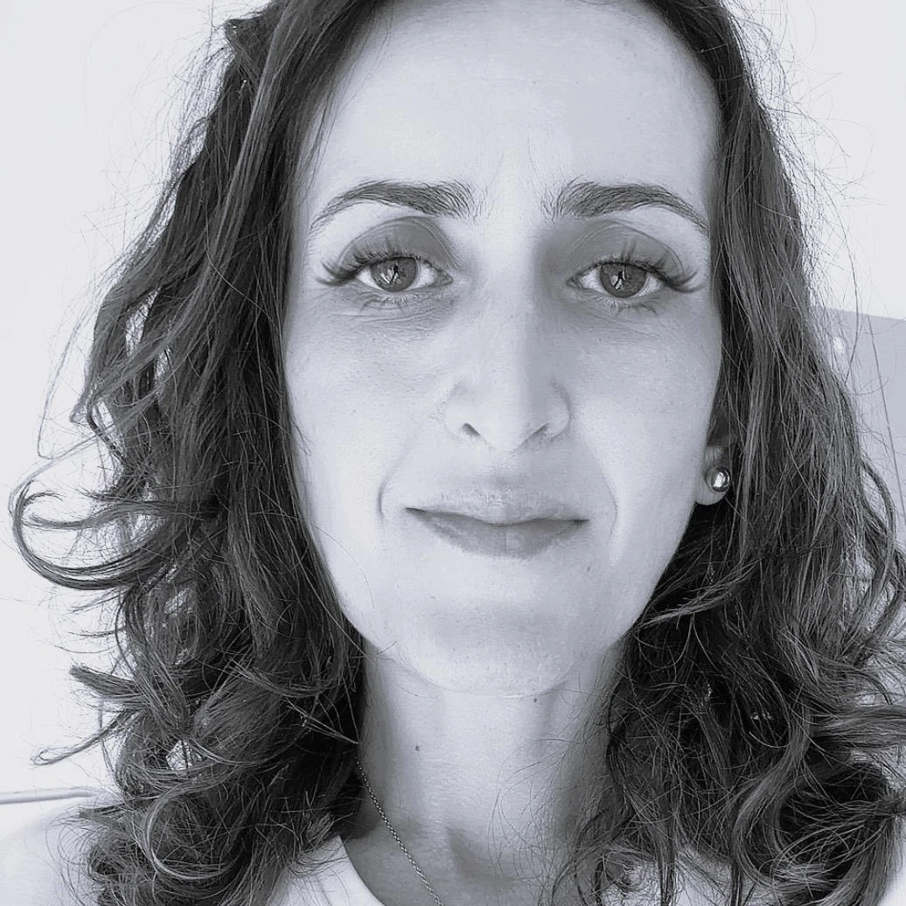

01 / SAÚDE ORAL
Medicina
dentária
Prevenção, reabilitação e estética do sorriso, com soluções para todas as idades.
Ver tratamentos dentáriosCiência e arte ao serviço de si. Medicina dentária, estética avançada e hipnoterapia, com um cuidado próximo e personalizado.

Rua Camilo Castelo Branco, 192A
Seg. a sex. 10h–19h · Sáb. 10h–13h
As suas necessidades, em primeiro lugar
Da saúde do seu sorriso ao seu bem-estar, encontre os cuidados que procura.
Prevenção, reabilitação e estética do sorriso, com soluções para todas as idades.
Ver tratamentos dentáriosPlanos individualizados para valorizar os seus traços e a harmonia natural do rosto.
Ver cuidados de estéticaAcompanhamento focado no bem-estar, na relação com os hábitos e nos objetivos pessoais.
Conhecer a hipnoterapiaConheça as nossas opções. A indicação de cada tratamento é definida numa avaliação individual.
17 tratamentos apresentados
Reabilitação de dentes perdidos, com soluções fixas e planeamento personalizado.
Conhecer o tratamentoAlinhamento dentário com aparelhos fixos e alinhadores invisíveis.
Conhecer o tratamentoBranqueamento, facetas e cuidados para a harmonia do sorriso.
Conhecer o tratamentoConsultas de higiene oral e prevenção para cuidar da saúde do seu sorriso.
Conhecer o tratamentoAcompanhamento do desenvolvimento dos maxilares e do equilíbrio facial.
Conhecer o tratamentoAvaliação da articulação da mandíbula, da dor facial e da função mastigatória.
Conhecer o tratamentoTratamento da parte interna do dente para preservar a dentição natural.
Conhecer o tratamentoRestauração de dentes com cáries, fraturas ou desgaste.
Conhecer o tratamentoCuidados das gengivas e dos tecidos que suportam os dentes.
Conhecer o tratamentoSoluções fixas e removíveis para recuperar a função e a estética dentária.
Conhecer o tratamentoRelaxamento muscular para suavizar rugas de expressão, após avaliação clínica.
Conhecer o tratamentoVolume, definição e hidratação para valorizar a harmonia natural do rosto.
Conhecer o tratamentoEstimulação da produção de colagénio para melhorar a firmeza e elasticidade.
Conhecer o tratamentoProcedimentos de sustentação e bioestimulação para os contornos faciais.
Conhecer o tratamentoHidratação das camadas profundas da pele com um plano individualizado.
Conhecer o tratamentoMicroperfurações para estimular a renovação e melhorar a qualidade da pele.
Conhecer o tratamentoAcompanhamento do bem-estar emocional, de hábitos e de objetivos pessoais.
Conhecer o tratamentoA sua saúde
merece precisão.
A sua estética
merece arte.
Ciência e arte ao serviço do seu bem-estar.
Na EsteticaMente, aliamos a tecnologia de vanguarda a um atendimento estético luxuoso e personalizado.
Mais do que tratar pessoas, devolvemos a confiança e a alegria de sorrir com resultados naturais e duradouros.
Conhecer a EsteticaMenteConheça os profissionais da EsteticaMente e encontre um acompanhamento próximo.
Corpo clínico
Conhecer o perfil
Corpo clínico
Conhecer o perfil
Corpo clínico
Conhecer o perfil
Terapeuta
Conhecer o perfilEncontre as informações essenciais para preparar a sua consulta.
Pode ligar para +351 964 624 361 ou contactar-nos pelo WhatsApp. A equipa confirma a disponibilidade e a sua marcação.
Estamos na Rua Camilo Castelo Branco, Nº 192A, 2910-447 Setúbal. Ver localização no mapa
De segunda a sexta-feira, das 10h às 19h, e ao sábado, das 10h às 13h.
Sim. A clínica tem acordos com diversas entidades. Contacte a equipa para confirmar se a sua entidade está abrangida e quais as condições aplicáveis.
Fale com a nossa equipa e encontre o melhor momento para cuidar de si.
Rua Camilo Castelo Branco, Nº 192A
2910-447 Setúbal
Segunda a sexta: 10h–19h
Sábado: 10h–13h
Consulte as condições com a equipa.